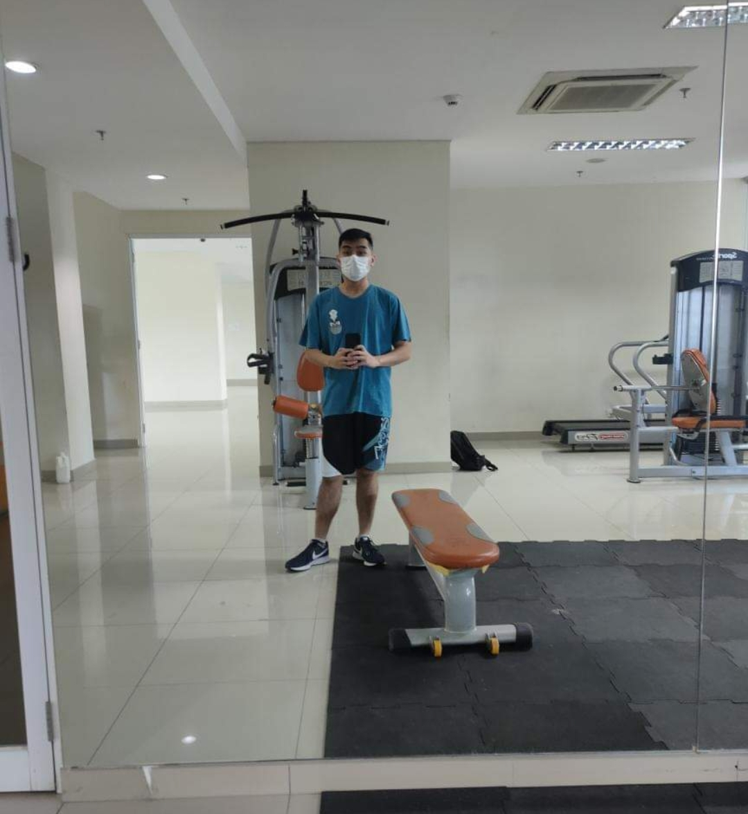

Marcellus Cornelius Vanza Kwanto, also known as Marcellus Vanza, was born in Jakarta on 2nd January 2003. He has already been sent to school since he was two years old. He studied at Bunda Hati Kudus Catholic School from kindergarten to Middle School.He did a pretty great job while in Bunda Hati Kudus School. He always managed to get into the top 10 in class every year. He also join misdinar organization in the church and still be an active member until now. In the 6th grade, he found a new interest which built his future hobby until now. He started to explore the robotics world and electrical world. Starting from his first handmade power supply in the 6th grade, he joined the electrical club in middle school. In the electrical club, he explored more with his projects. He made a city miniature, a 3-meter height elevator miniature, and a smart hydroponic with his friends. Because of his projects, Vanza and seven other students were trusted by the principal to represent the school in Jakarta's biggest Catholic school expo. Besides that, he was also elected to be the secretary of the student council for two years.
In High School, he decided to change school. He was admitted to the best private school in Indonesia, SMAK 1 PENABUR JAKARTA. In high school, he continued his interest from middle school. Since the 10th grade, he has already joined the robotic club. In the robotic club, he learned his first program, Arduino. With Arduino, he made some projects such as a racing robot, smart traffic light system, smart alarm, and many others. In the 12th, he had to study hard to be admitted to a good university. He managed to take A level, SAT, IELTS, and EJU classes. As a result, he was admitted to The Chinese University of Hongkong (CUHK) Shenzhen. He is now a second-year student at CUHK Shenzhen, majoring in computer engineering with GPA of 3.236.

Marcellus Vanza 2022
Nowadays, Marcellus still actively serves the Church weekly. In summer 2021, he worked as a STEM educator at Numerade,
teaching mathematics to middle school students. He has learned some programming languages such as python, C/C++, java, and HTML/CSS/JavaScript.
He is still learning more about programming and focusing on a work-life balance by exercising in the GYM and badminton four times a week.
<= back